Probability of a Byzantine Takeover of the Digital Assets Network
- Introduction
- Tari Digital Assets Network
- Implementation
- Conclusions and Remarks
- References
- Appendices
- Contributors
Introduction
This investigation aims to provide answers to questions posed about the workings of the Tari Digital Assets Network (DAN) environment. It covers probabilistic attack vector with regard to the total nodes, compromised nodes, committee size and Byzantine Fault-tolerance (BFT) threshold.
The investigation attempts to answer the following question: What is the percentage chance of controlling the majority of nodes in a random sample with varying quantities of the total number of nodes, committee size, bad nodes and BFT threshold?
Tari Digital Assets Network
The Tari Digital Assets Network (DAN) forms part of the Tari second layer, where the management of all digital asset interactions takes place.
These interactions are processed and validated by committees of special nodes, called Validator Nodesdef (VNs). Management of Digital Assets (DAs) involves state changes and ensures enforcement of the rules that govern assets contracts. Thus, all actions on this network are due to the interactions of the VNs. The registration of VNs occurs on the base layer. To prevent Sybil attacks, they commit collateral. If proved that the VN engaged in malicious behavior, the VN will lose its collateral.
An Asset Issuer def (AI) would then issue DAs and draw up a contract. The AI will dictate the size of the committee of VNs for a particular DA. The AI will also have the ability to nominate a trusted node to form part of the VN committee for the DA [1].
Kademlia
Kademlia was designed by Petar Maymounkov and David Mazières in 2002 [2]. It is a distributed hash table, used for decentralized, peer-to-peer computer networks.
Node ID
A node selects an $n$-bit ID, given to nodes on the network. Node IDs have uniformly distributed numbers. A node's position is determined by a unique prefix of its ID, which forms a tree structure, with node IDs as leaves.
The bit length of the node ID should be sufficiently large to make collisions unlikely when using a uniformly distributed random number generator [3].
Bootstrapping a Node
A bootstrap node is a node listed on a predetermined list, and serves as the first point of contact for a new node. The node bootstrapping process is as follows:
- To establish itself on the network without any known contacts, a node needs to contact at least one bootstrap node, requesting an introduction to the network.
- A node ID is generated for the joining node.
- The new node contacts other nodes of which it is aware.
- The new node sends a lookup request with its newly generated node ID.
- The contacted nodes return the nodes they know about that are closest.
- The new nodes are added to the routing table, and contacting begins.
- The process continues until the joining node is unable to locate any closer nodes.
This self-lookup has two effects:
- it allows the node to learn about nodes closer to itself; and
- it populates other nodes' routing tables with the node's ID [3].
XOR Metric
The Kademlia paper, published in 2002 [2], contained the novel idea of using the XOR operator to determine the distance and therefore the arrangement of peers within the network.
Through the XOR metric, a distance is captured. The lookup procedure allows nodes to locate other nodes, given a node ID [3].
Implementation
The following calculations were done using the Tari Labs Modelling Repository.
Crude Monte Carlo Simulation
Proving the Law of Large Numbers
With the Crude Monte Carlo technique, to gain precision, the number of samples can be increased. Thus, before calculating the probability and drawing comparisons, the sample size, number of draws within an experiment, and the number of experiments can be varied to find an optimal amount.
Below is the input data inserted into the python programme with dependencies network setup and random distribution, where the number of draws within an experiment is $10$, and the number of experiments is $10$:
What is the total amount of nodes? 100
What is the amount of bad nodes? 60
How many nodes are to be drawn? 3
What is the BFT threshold within the committee? 2
What is the number of draws within an experiment? 10
How many experiments? 10
Do you know the theoretical mean? Y|N: Y
What is the theoretical mean? 0.649474335188621
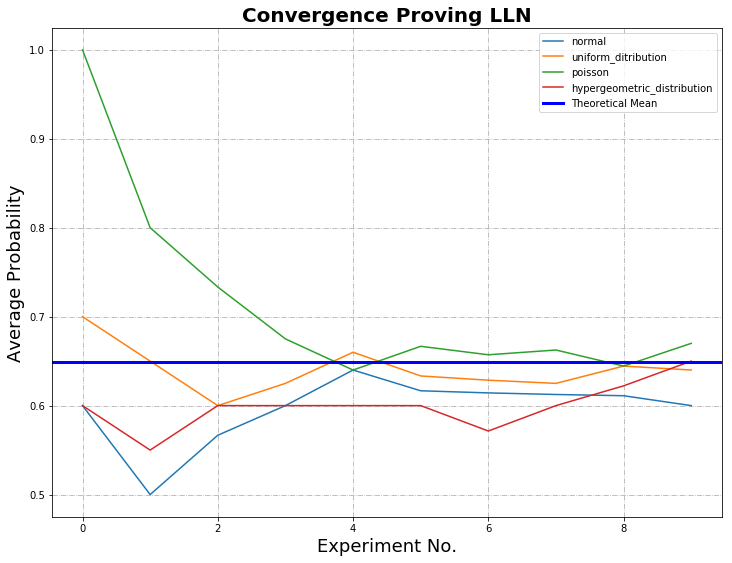
Below is the input data inserted into the python programme, where the number of draws within an experiment is $1,000$ and the number of experiments is $1,000$:
What is the total amount of nodes? 100
What is the amount of bad nodes? 60
How many nodes are to be drawn? 3
What is the BFT threshold within the committee? 2
What is the number of draws within an experiment? 1,000
How many experiments? 1,000
Do you know the theoretical mean? Y|N: Y
What is the theoretical mean? 0.649474335188621

In each graph, the cumulative probabilities calculated for normal, uniform, Poisson and hypergeometric distribution are plotted against the number of experiments. The bold blue line represents the mean calculated from theoretical data.
In the first graph, where the experiments and draws are equal to $10$, there is weak convergence. In the second graph, where the experiments and draws are equal to $1,000$, the Law of Large Numbers (LLN) is proved; as the sample size grows, convergence with the statistical mean is achieved.
Individual Probabilities
The following graph highlights the varying probabilities of each experiment conducted for the hypergeometric distribution. The mean of this distribution provides us with the average of the probabilities, which can then be compared to the calculated theoretical mean.
From a comparison of the mean probability of each distribution with the theoretical mean, it can be seen that the distribution type that closely mimics the theoretical result is hypergeometric.
Hypergeometric distribution is where there is no replacement, i.e. nodes are drawn simultaneously, distinguished and not returned to the pool of total nodes.
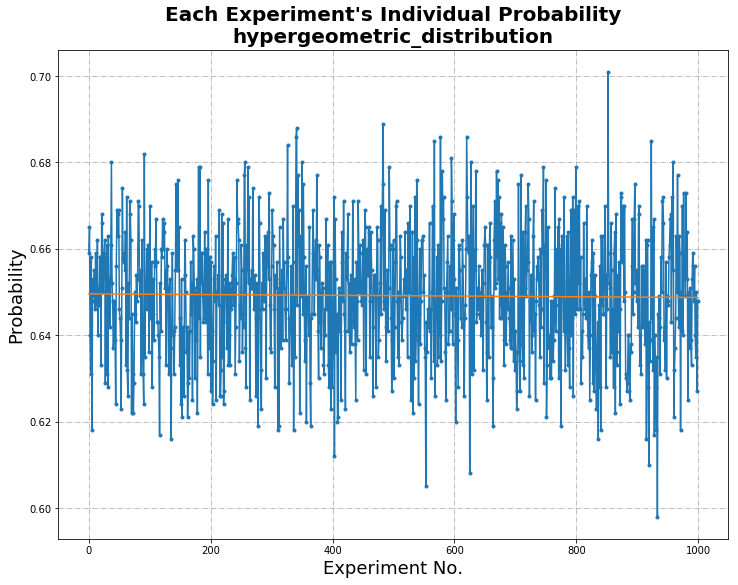
Uniform Distribution
| Statistical Information | Comparison with Theoretical Mean | Difference Calculated | |
|---|---|---|---|
| Intercept | 0.6497887492507493 | 0.649474335188621 | 3.14414E-4 |
| Standard Deviation | 0.015438728229013219 |
Hypergeometric Distribution
| Statistical Information | Comparison with Theoretical Mean | Difference Calculated | |
|---|---|---|---|
| Intercept | 0.6495665834165834 | 0.649474335188621 | 9.22482E-5 |
| Standard Deviation | 0.014812123075035204 |
Poisson Distribution
| Statistical Information | Comparison with Theoretical Mean | Difference Calculated | |
|---|---|---|---|
| Intercept | 0.6501259280719281 | 0.649474335188621 | 6.51592E-4 |
| Standard Deviation | 0.015233575444419514 |
Normal Distribution
| Statistical Information | Comparison with Theoretical Mean | Difference Calculated | |
|---|---|---|---|
| Intercept | 0.6482901778221778 | 0.649474335188621 | 1.18416E-3 |
| Standard Deviation | 0.01507612979811762 |
Histogram and Visualization of Distribution
The histogram of randomness highlights the distribution of good and bad nodes selected in each experiment, highlighting the random nature of the experiment.
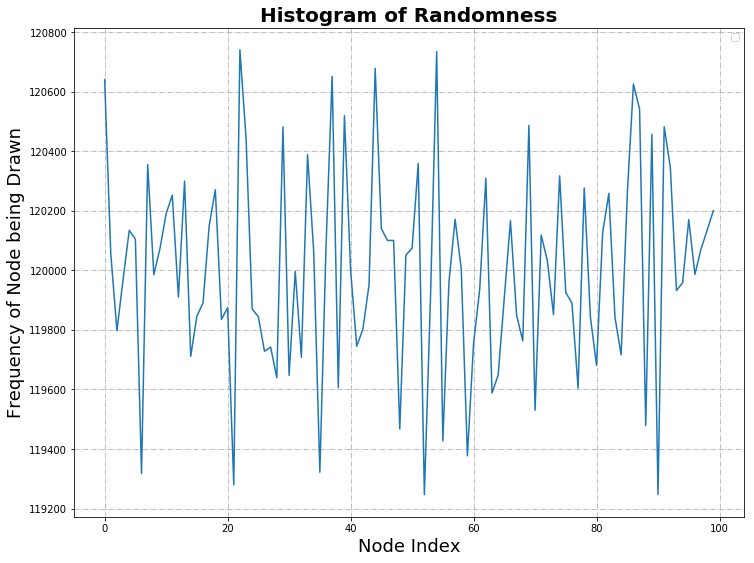
| Statistical Information | |
|---|---|
| Mean | 120,000.0 |
| Median | 119,991.0 |
| Mode | - |
| Standard Deviation | 346.4313595341606 |
Statistical Calculation
Literature about BFT threshold advises the number of good nodes to be at least $\frac{2}{3} \cdot n+1$, where $n$ is the number of nodes. In the calculations that follow, BFT threshold of, for example, $67$% of N, is implemented with rounding up to ensure that at least that fraction is obtained. In this sense, $67$% of N simulates $\frac{2}{3} \cdot n+1$.
Variation of Total Nodes
The variables and results are below:
- N (total number of nodes in the network) = $100, 300, 500, 1000$
- m (number of bad actors) = $60$% of N
- T (BFT threshold) = $67$% of N
- n (committee size) = ranging from $1$ to $1,000$
The above graph was calculated using Python (variations of N with dependencies hypergeometric distribution). Below is a sample of the data where there is a total of 100. The highlighted data was previously used in the Crude Monte Carlo Simulation when supplying the theoretical mean.
| Total Nodes | Bad Nodes | Committee Size | BFT Threshold | Probability |
|---|---|---|---|---|
| 100 | 60 | 1 | 1 | 0.6 |
| 100 | 60 | 2 | 2 | 0.3575757575757576 |
100 | 60 | 3 | 2 | 0.649474335188621 |
| 100 | 60 | 4 | 3 | 0.47343240951488375 |
| 100 | 60 | 5 | 4 | 0.33162085827770661 |
| 100 | 60 | 6 | 4 | 0.5443381851334722 |
| 100 | 60 | 7 | 5 | 0.4153500188485931 |
| 100 | 60 | 8 | 6 | 0.30661160770090995 |
| 100 | 60 | 9 | 6 | 0.47996269793634677 |
| 100 | 60 | 10 | 7 | 0.37423758246308586 |
| 100 | 60 | 11 | 8 | 0.28361605491457653 |
| 100 | 60 | 12 | 8 | 0.4320215340178938 |
| 100 | 60 | 13 | 9 | 0.3409545354772218 |
| 100 | 60 | 14 | 10 | 0.2623321970180976 |
| 100 | 60 | 15 | 10 | 0.39288184738975973 |
Variation of Byzantine Fault-tolerance Threshold
The variables and results are below:
- N (total number of nodes in the network) = $100$
- m (number of bad actors) = $60$% of N
- T (BFT threshold) = $50$%, $55$%, $60$%, $67$% of N
- n (committee size) = ranging from $1$ to $100$
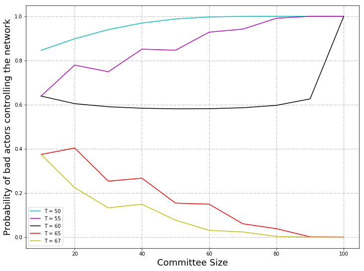
The above graph was calculated using Python (variations of BFT with dependencies hypergeometric distribution). From a plot of committee size versus probability where the number of nodes remains at $100$ with a change in $T$, the BFT threshold, ranging from $50$% to $67$%, it can be seen that When the BFT threshold is $50$% and $55$%, the probability is low when the committee size is small; as the committee size increases, the probability increases, and tends to $1$. The probability is higher for the case where the BFT threshold is $50$% than when the probability is $55$%.
When the BFT threshold is $60$%, the probability decreases from $0.63$ to approximately $0.59$, where it remains constant.
When the BFT threshold is $65$% and $67$%, the probability decreases from $0.38$ and tends to zero. This confirms the BFT threshold of $\frac{2}{3} \cdot n+1$ as per literature.
Variation of Total Number of Nodes with Committee Size 10
The variables and results are below:
- N (total number of nodes in the network) = ranging from $10$ to $350$
- m (number of bad actors) = $60$% of N
- T (BFT threshold) = $67$% of N
- n (committee size) = $10$
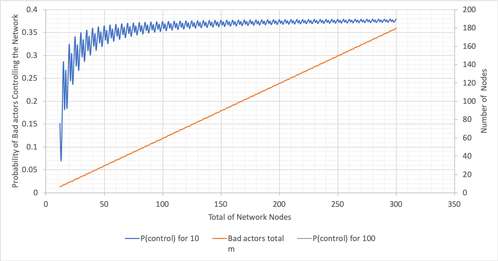
The above graph was calculated using Excel (variations of N with n fixed). For the graph showing varying probabilities with respect to the total number of network nodes, where the committee size is $10$, the probability dramatically increases when the total nodes is $3$ times more than the committee size and onwards. The probability plateaus at $0.35$.
Variation of Total Number of Nodes with Committee Size 100
The variables and results are below:
- N (total number of nodes in the network) = ranging from $100$ to $1,300$
- m (number of bad actors) = $60$% of N
- T (BFT threshold) = $67$% of N
- n (committee size) = $100$
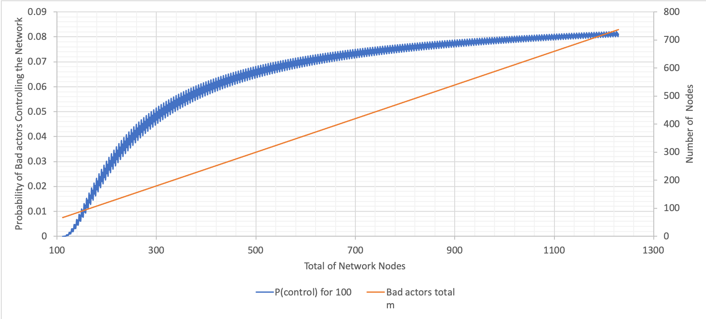
The above graph was calculated using Excel (variations of N with n fixed). From this and the previous graph, it can be seen that probabilities are significantly lower when the committee size is $100$ compared to when it is $10$. There is an increase in probability up to a network size of $700$, albeit, not as steep as the change when the committee size is $10$. The probability plateaus at $0.08$.
The larger the committee size, the fewer dramatic changes there are in the probability.
Variation of Bad Nodes with Committee Size 10 and 100
The variables and results are below:
- N (total number of nodes in the network) = ranging from $10$ and $100$ to $50,000$
- m (number of bad actors) = $10$%, $20$%, $30$%, $40$%, $50$%, $60$%, $70$%, $80$% and $90$% of N
- T (BFT threshold) = $67$% of N
- n (committee size) = $10$ and $100$
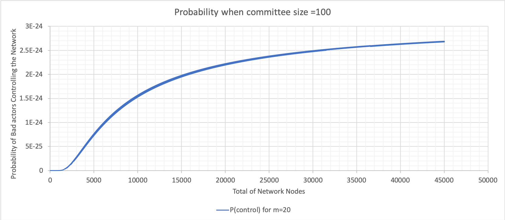
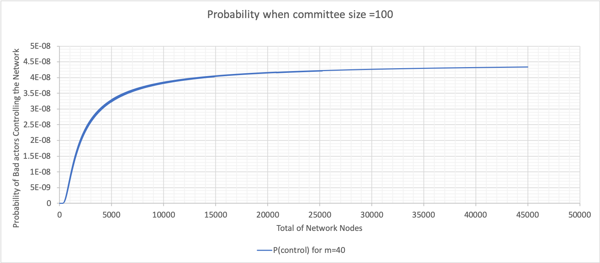
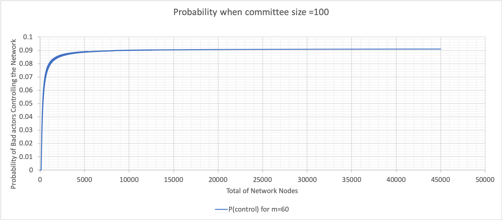
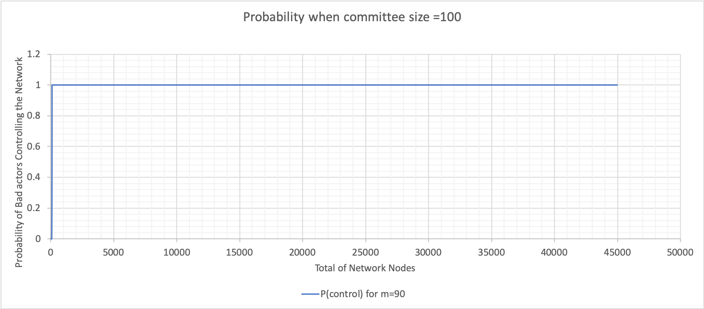
The above graphs were calculated using Excel (bad node variation where n is 100). These graphs show varying probabilities when the percentage of bad nodes is $20$, $40$, $60$ and $90$. The value when the probability plateaus is used to construct the following graph for both committee sizes $10$ and $100$.
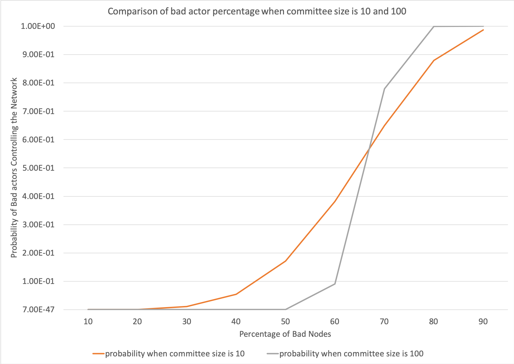
The above graph was calculated using Excel
(bad node percentage at 10 and 100). The
graph shows changes in the probability due to changes in percentage of bad nodes when the committee size is $10$ and $100$. When
the committee size is $10$, there is a change in probability when the bad node percentage is between $30$ and $80$.
When the committee size is $100$, there is a steep increase in the probability when the bad node percentage is between
$50$ and $80$. When the committee size is $100$, the probability remains lower as the bad node percentage increases and
has a steeper gradient when the change in probability occurs. Whereas, when the committee size is $10$, the probability
begins to increase at a lower percentage of bad nodes.
Conclusions and Remarks
With regard to the Crude Monte Carlo Simulation, at this building block stage, probabilities were calculated and distributions of nodes within the network illustrated.
With regard to the statistical calculation, comments can be made for each of the varied parameters.
- Total nodes in the network: The smaller the pool of total nodes in the network, the lower the probability of bad actors controlling the network. However, the probability difference is near negligible if the committee size is large. This parameter will also be difficult to control, and the network will be ever-increasing. This can be seen in the graph in Variation of Total Nodes.
- BFT threshold: This threshold should be at least $\frac{2}{3} \cdot n+1$ as per literature. This can be seen in the graph in Variation of Byzantine Fault-tolerance Threshold.
- Committee size: The larger the committee size, the lower the probability of bad actors controlling the network. This can be seen in the graph in Variation of Total Number of Nodes with Committee Size 10 and Variation of Total Number of Nodes with Committee Size 100.
- Bad nodes: While this variable cannot be controlled, the probability of bad actors controlling the network can remain low, as the percentage of bad nodes increases if the committee size is approximately $100$ or larger. This can be seen in the graphs in Variation of Bad Nodes with Committee Size 10 and 100
References
[1] C. Sharrock [online]. Available: https://rfc.tari.com/RFC-0300_DAN.html. Date accessed: 2019‑07‑18.
[2] P. Maymounkov and D. Mazières, "Kademlia: A Peer-to-peer Information System Based on the XOR Metric" [online]. Available: https://pdos.csail.mit.edu/~petar/papers/maymounkov-kademlia-lncs.pdf. Date accessed: 2019‑07‑18.
[3] S. Bondi, "Distributed Hash Tables" [online]. Available: https://tlu.tarilabs.com/protocols/dht/MainReport.html. Date accessed: 2019‑07‑18.
Appendices
Appendix A: Definitions of Terms
Definitions of terms presented here are high level and general in nature.
- Asset Issuer (AI): An entity that creates digital assets on the Tari Digital Asset Network (DAN). The Asset Issuer will specify the parameters of the contract template that defines the rules that govern the asset and the number and nature of its constituent tokens on issuance. The AI will, generally, be the initial owner of the tokens [1].
- Validator Node (VN): Validator nodes make up the Tari second layer, or Digital Asset Network (DAN). VNs are responsible for creating and updating digital asset living on the Tari network [1].